いたずらネコ vs 柴犬警察！11ターン逃げ切れ！
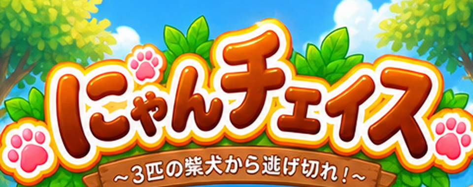
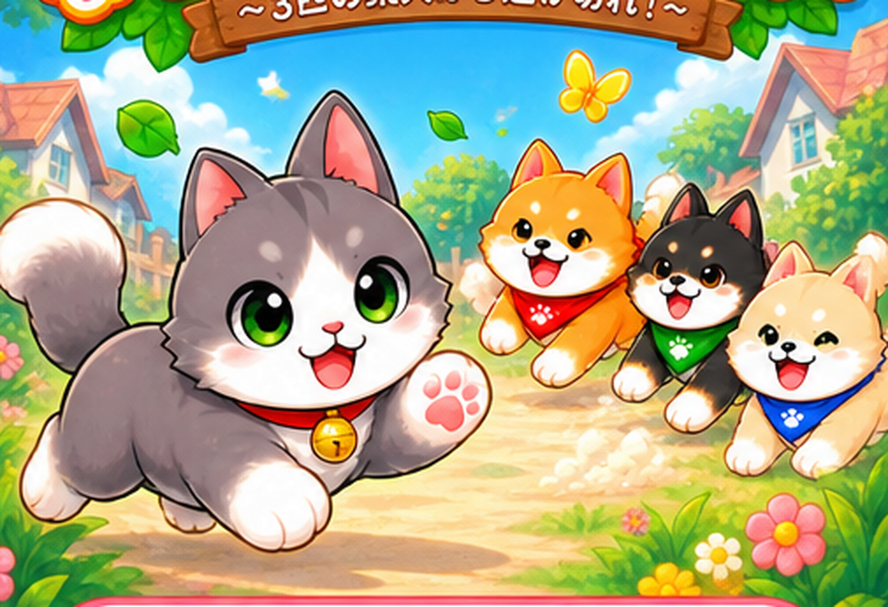
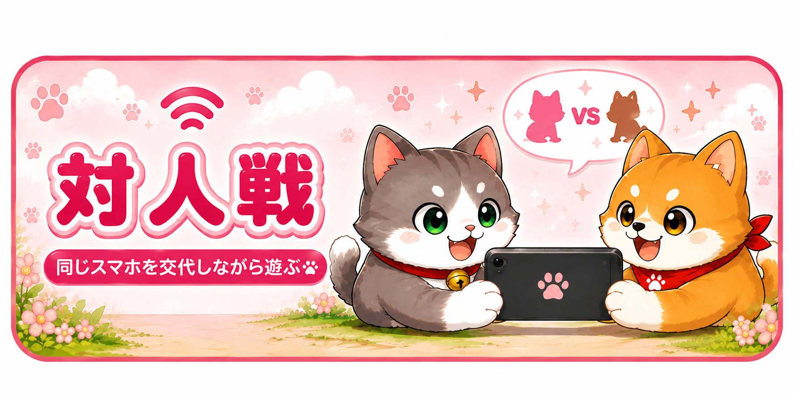
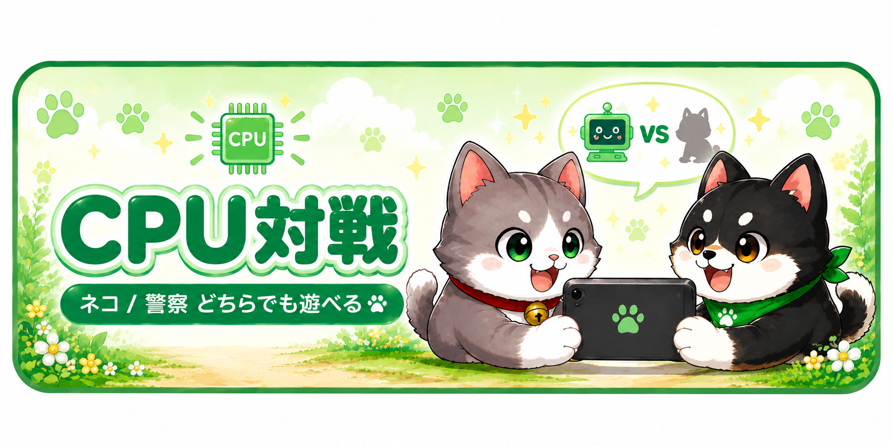
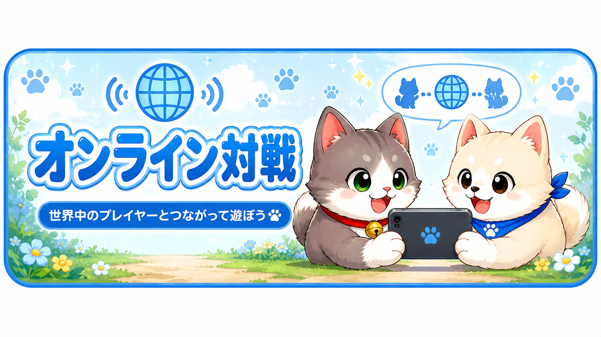
どのルールで遊ぶ？
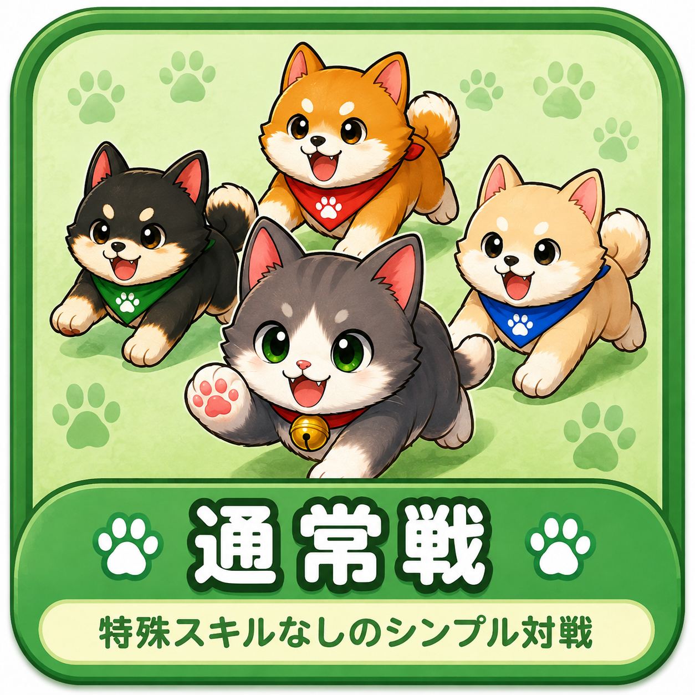
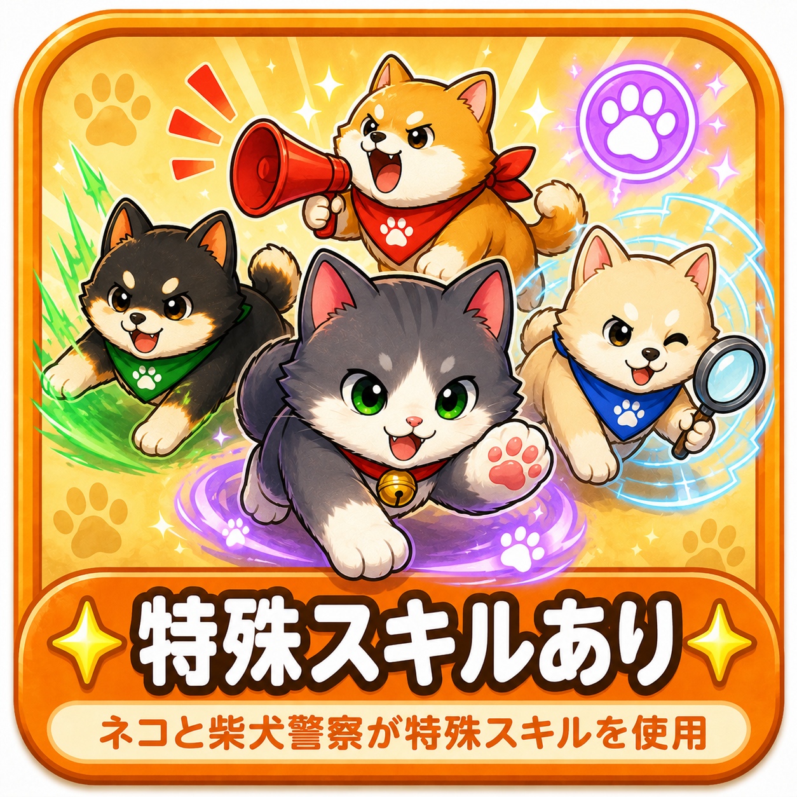
離れた相手とにゃんチェイス！
CPU対戦の役割を選んでね
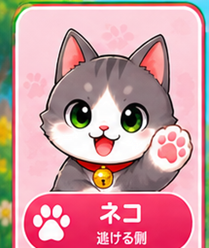
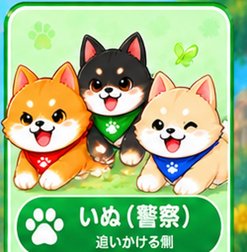
スキルをタップすると詳細を確認できます。
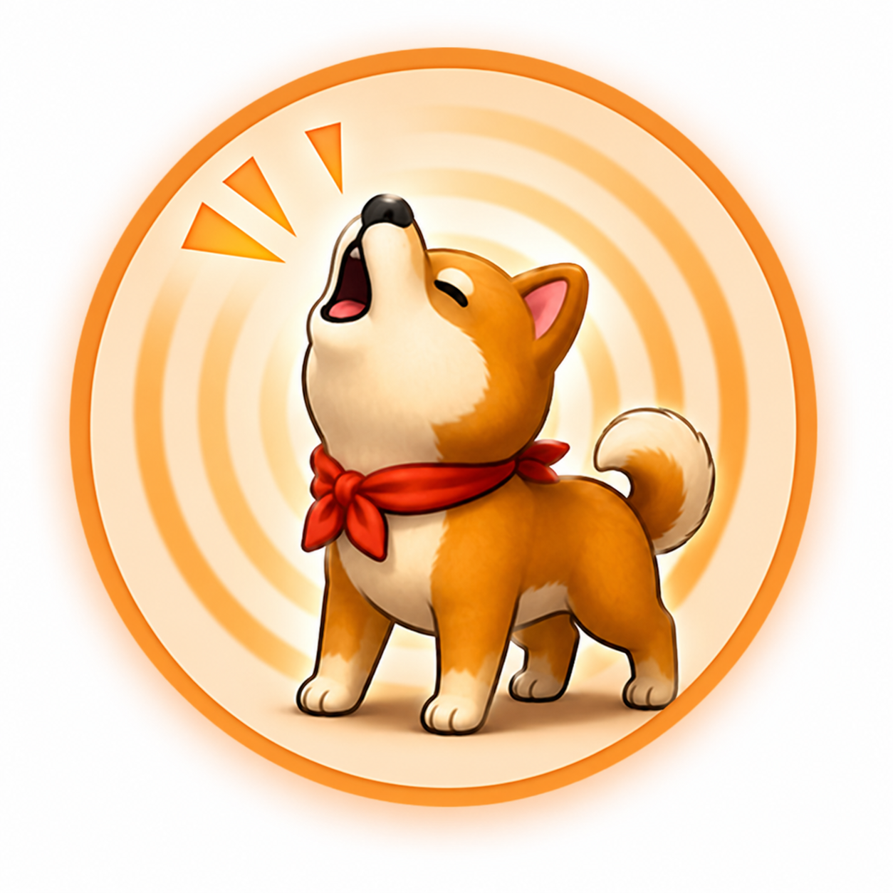
あか柴の周囲4箱にネコがいるかどうかを探知します。
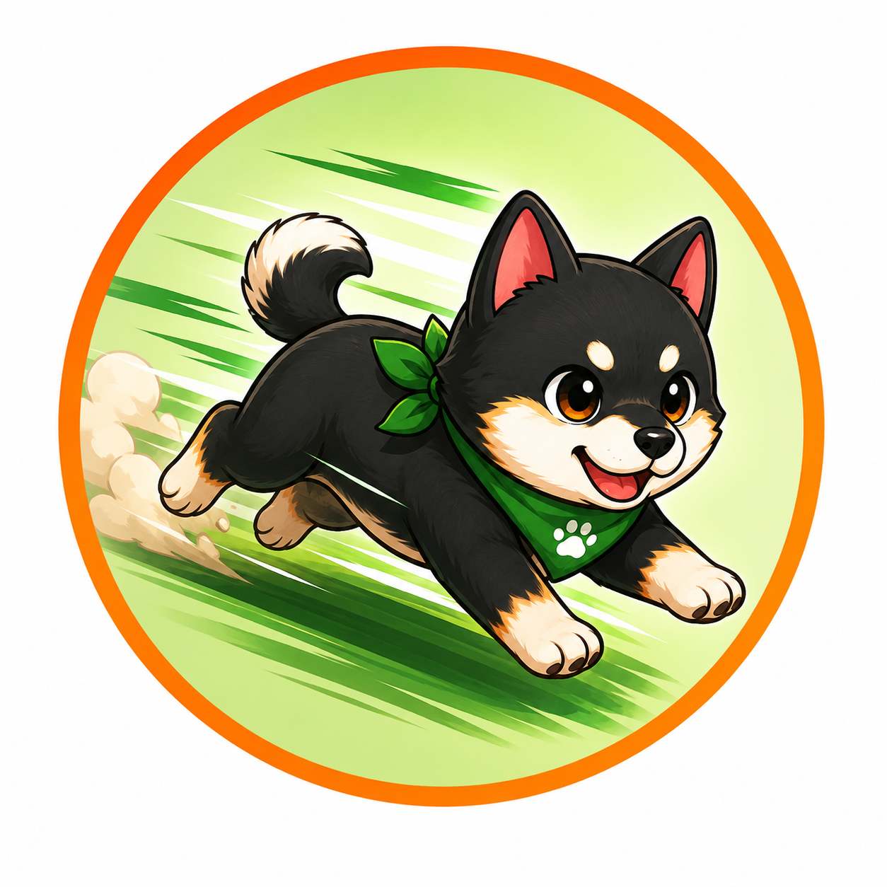
くろ柴が通常の1マス移動ではなく、2マス先まで一気に移動します。
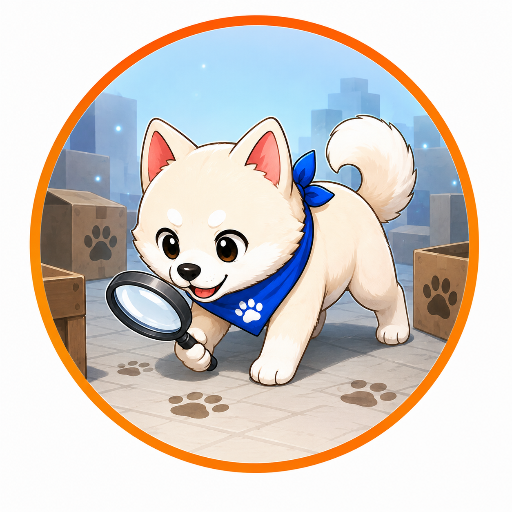
しろ柴の周囲4箱から2箱を選び、一度の行動で両方を探索します。
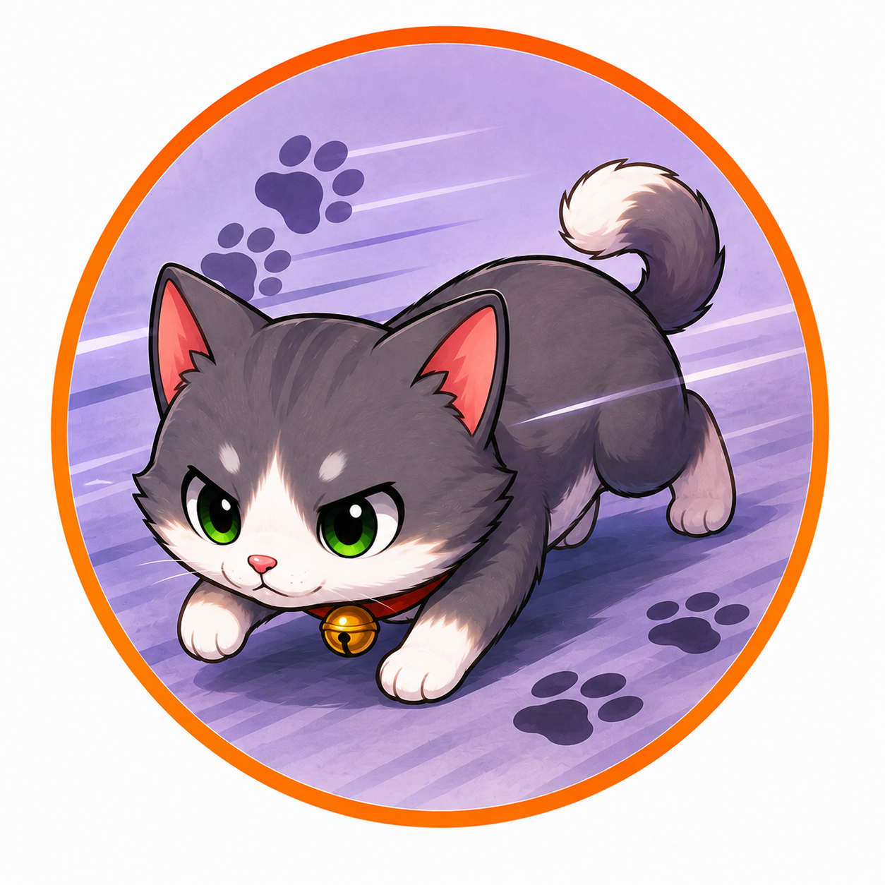
移動前にいた箱の足跡を残さずに移動します。
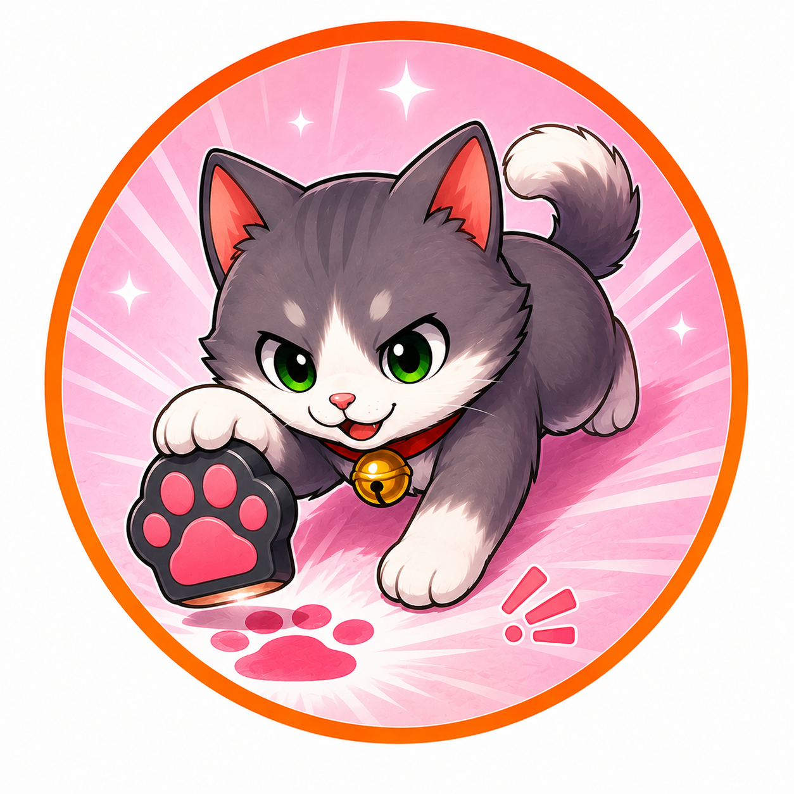
本当の移動先とは別の箱に、偽の足跡を残します。
どの強さで遊ぶ？